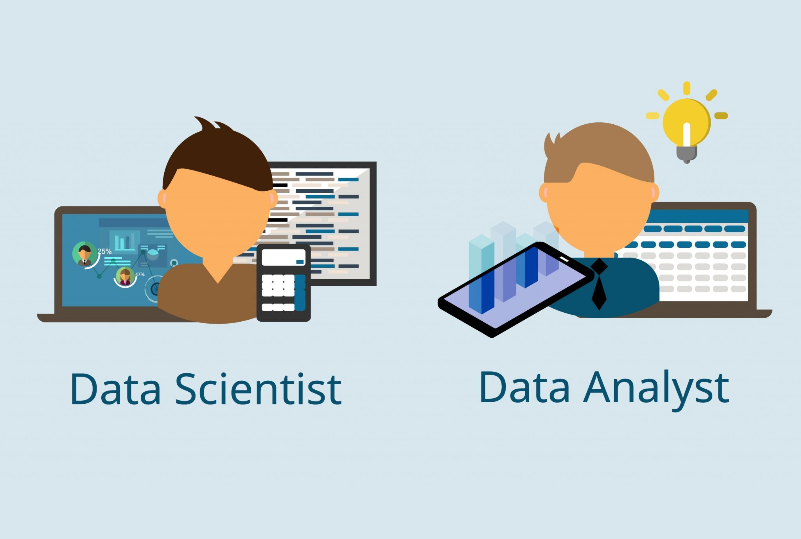

About David Ogunniyi
Dedicated and results-driven Data Analyst with a strong track record of transforming complex data into actionable insights. Proficient in data extraction, analysis, and visualization using a variety of tools and languages, including Python, SQL, Excel, R, and Power BI.

EDUCATION
BACHELOR OF ENGINEERING IN ELECTRICAL AND ELECTRONICS ENGINEERING (LANDMARK UNIVERSITY)
September 2013 to June 2018• Activities and societies: Nigeria Engineering Society (Graduate member)
• Grade: 4.24/5.0
MASTER OF SCIENCE IN APPLIED DATA SCIENCE (TEESSIDE UNIVERSITY)
September 2021 to June 2023• Grade: Distinction
EXPERIENCE
Data Analyst | LUCKMAN’S LIMITED | Remote
Nov 2019 - Present• Utilized Excel and Power BI to create monthly company reports.
• Employed Python frameworks and SQL to gather and extract data from various sources.
• Developed dashboards and visualizations using Power BI and SQL to monitor key performance indicators.
• Conducted quantitative and qualitative analyses to evaluate data quality and extract valuable insights.
• Collaborated with team members to identify process improvement opportunities and propose system enhancements.
• Prepared analysis reports and presentations with Power BI and Microsoft PowerPoint for stakeholders to facilitate informed decision-making.
• Utilized R, Python, SQL, and Excel for data extraction, pattern analysis, and trend interpretation.
• Conducted a comprehensive analysis of customer demographics and purchasing behaviours, resulting in a targeted marketing campaign that increased sales by 53%.
• Conducted ad-hoc analyses to answer business questions and provide insights to stakeholders, resulting in improved operational efficiency and cost savings.
• Developed a predictive model that accurately forecasts customer churn with 87% accuracy using machine learning.
Field Researcher | IPSOS MORI | Remote
Jan 2022 - Feb 2022• Managed data collection using proprietary software.
• Conducted interviewer-administered interviews.
• Recruited participants for various studies.
• Created a dashboard to visualize key performance metrics and trends in order to gain insights and make data-driven decisions.
Data Analyst Graduate Trainee | PETRO-BASE GROUP
Nov 2018 - Oct 2019• Created dashboards and visualizations with Power BI to monitor pipe conditions and ultrasonic thickness measurements.
• Produced weekly reports for diverse stakeholders using Excel, SQL, and Power BI.
• Assisted in the documentation process of the annual finance audit.
• Developed a reporting system that provided real-time insights into customer satisfaction and product performance.
• Analysed customer feedback to identify common trends and develop recommendations for improvement.
• Developed a risk management plan to identify and mitigate potential risks.
• Conducted market research to identify customer needs and develop strategies to meet them.
.